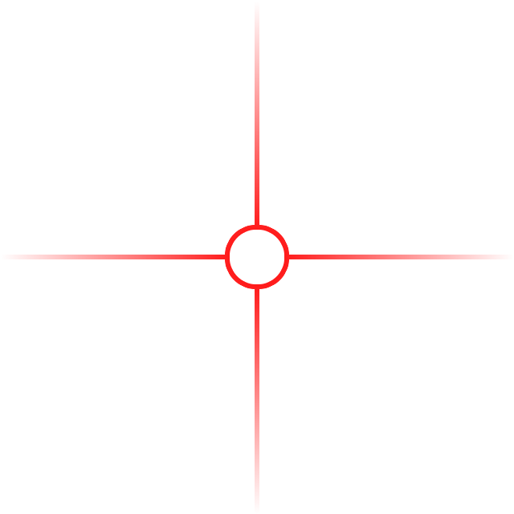

Please enable the camera and your speaker and prepare your diaper to be photographed with the stool tool marker
in the upper right hand corner of the frame.

please ensure the marker is in this frame
please ensure the marker is in the upper right corner